A trip built in the app for Vietnam, Thailand or Bali now carries its flights: to the country, between its cities, and home. Customers pick each flight with its fare and bags, and can change or remove any of them. Flights follow the trip when the route or dates change, and like the rest of the itinerary nothing is final until it is saved. Open the links on a phone or in a narrow window.
Build a trip in the wizard, log in with any number and any 6 digits (not 000000), and scroll to Flights on the itinerary. Fares in the prototype are samples; Jaipur is set up as the city with no flights.
Pick Hanoi and Hoi An (or add HCMC) to get flights inside the country. Hoi An flies from Da Nang; Ha Long from Hanoi.
Bangkok with Phuket or Chiang Mai adds a domestic flight. Phuket to Krabi is a drive, so no flight shows for it.
Every Bali area uses Denpasar airport, so most trips have only the flights out and home. Labuan Bajo adds a domestic flight; Nusa Penida is a boat.
On any trip, choose Jaipur as the city you fly from. The flights to and from India come back empty and the customer is sent to their travel consultant.
A trip built in the wizard shows a Flights section with one card: Flights not included in this price, a line on why to add them, and an Add flights button. The wizard itself does not ask for a departure city.
A trip made by a consultant starts with flights from Delhi already on it, which the customer can change, remove or move to another city.
The section has its own chip in the section bar (Flights) and sits after Plan together, before the consultant card. A trip opened from someone else's booking shows no flights to edit.
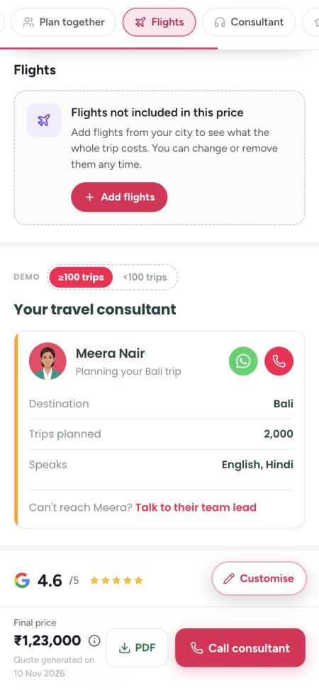
A sheet of 11 cities: Delhi, Mumbai, Bengaluru, Hyderabad, Chennai, Kolkata, Ahmedabad, Pune, Kochi, Jaipur, Indore. Picking one starts the steps.
Outbound, then each flight inside the country in trip order, then return. The header says which flight and how many (Outbound flight · 1 of 3), the route, the date, travellers and the city, with a progress bar.
A small plane flies an arc over skeleton cards while fares load: Fetching live fares for Tue, Dec 15. Nothing is pickable until they arrive.
Airline, fare per person, times, length, stops in orange (1 stop · BKK), a +1 when it lands the next day, cabin and check-in bags (or No check-in bag in orange), and Details. Five show first, then Show N more flights.
The best fit is selected and listed first: an outbound that lands the same day by 8 pm, a return that leaves after 11 am, a hop inside the country that leaves between 7 am and 5 pm. Options carry no tags, so no Cheapest, Shortest, Non-stop or Best for your trip.
Outbound and return are picked separately, so they can be on different airlines (Thai Airways out, IndiGo home). Each flight is its own card.
The footer keeps the total for all travellers so far, with: Flight prices are tentative. Save the itinerary to fetch the latest fares. The button says what is next (Next: Hanoi to Da Nang, Next: return flight), and Done on the last step.
Skip leaves that flight out and moves on. Back goes to the previous step; the cross on the first step closes without adding anything.
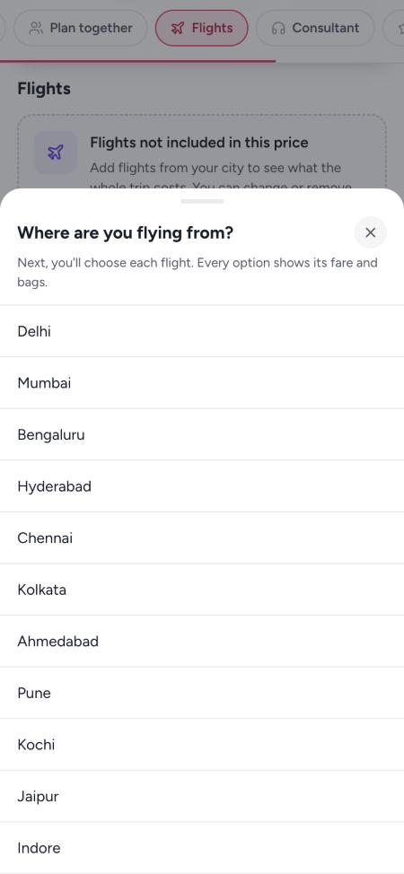
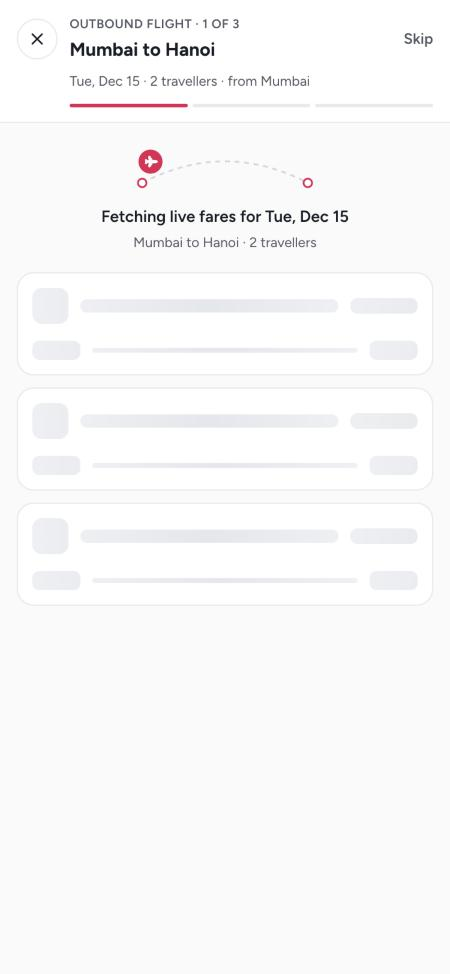
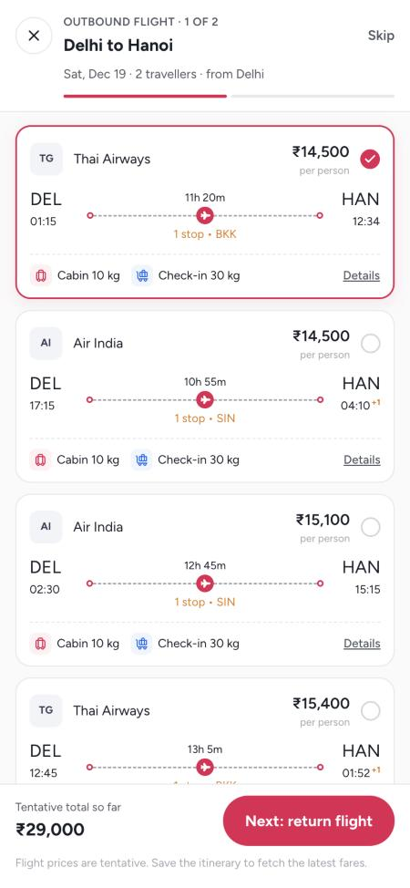
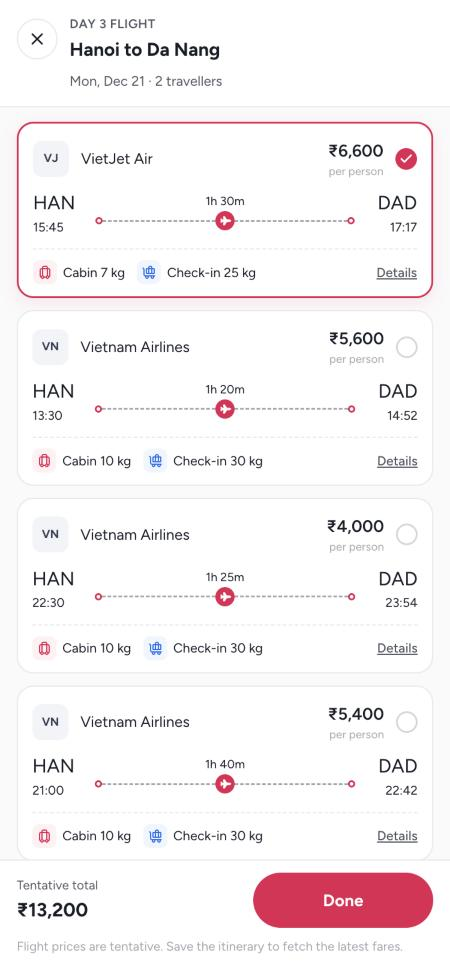
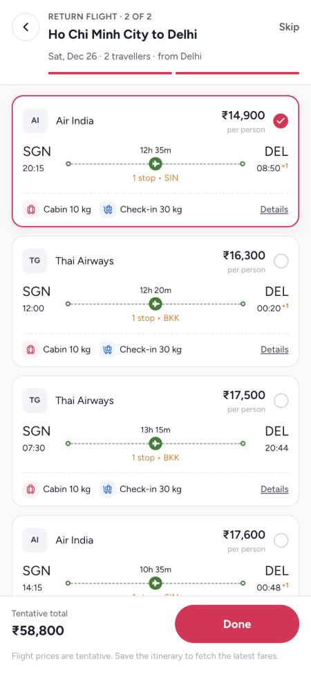
Flying from Mumbai with Change city on the right. Then International flights: outbound and return as two cards side by side, swiped, with dots. Then Domestic flights, each under its day and route (Day 4, Hanoi to Da Nang).
Airline and the fare for all travellers, then OUTBOUND, RETURN or ONE WAY with the date, the route row as in the app today, Change and Remove as two clear buttons, and Tap to view flight details. Nothing else is added to the card.
A bottom sheet: airline, flight number, total fare, each leg with times, airports and layovers, and the luggage allowance per traveller (cabin and check-in kg).
Before saving: Save the itinerary to see the latest fares and pricing. After saving: Fares as fetched when you last saved the itinerary.
Flights go into the indicative total in the bottom bar. While unsaved it reads Not saved yet · flight prices are tentative. A toast confirms: Flights added. Save the itinerary to fetch the latest fares.
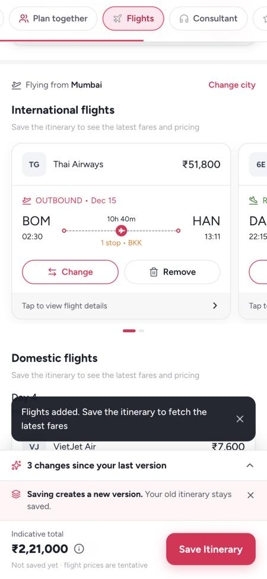
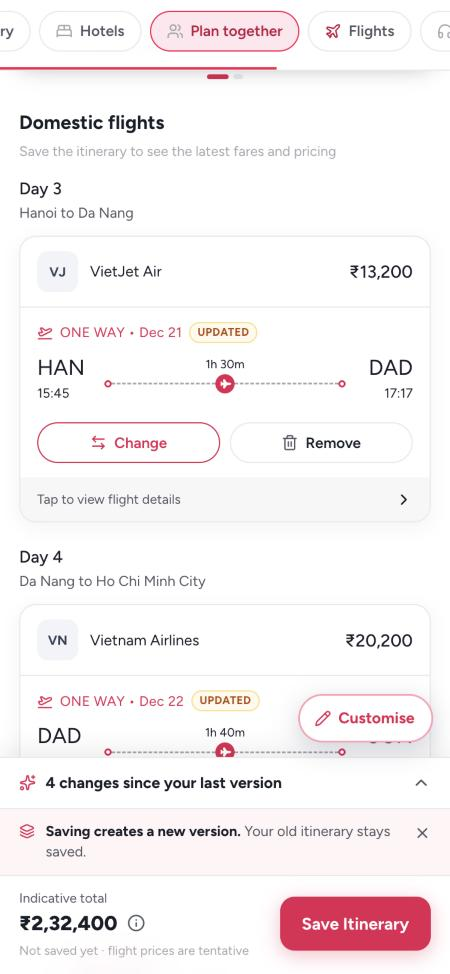
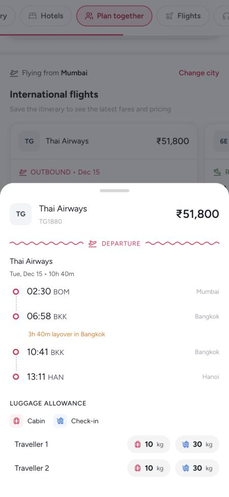
Opens the same step for that one flight, with the current flight selected and listed first, and no Skip. Toast: Flight changed. Save the itinerary to fetch the latest fares.
The card becomes a dashed row (Return flight not added, Da Nang to Mumbai · Dec 22) with Add. Toast: Return flight removed, with Undo. Removing both international flights shows one row, International flights not added, whose Add runs both steps.
The section goes back to Flights not included in this price.
Same city sheet with: We'll fetch flights from the new city. Your domestic flights stay as they are. Only the flights to and from India are picked again. Picking the same city closes the sheet.
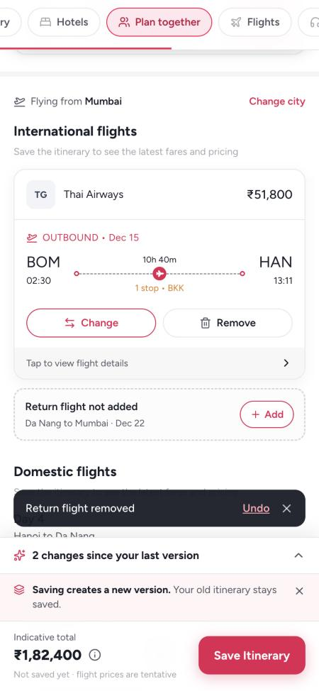
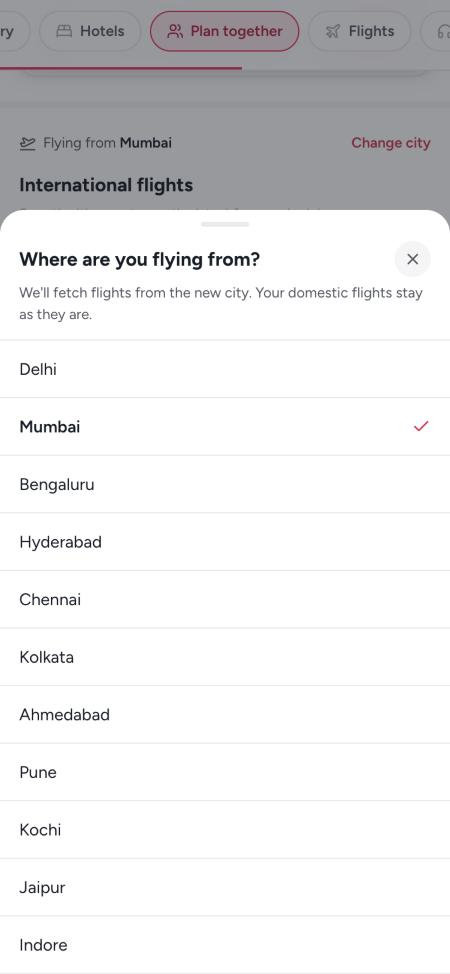
Every flight moves to its new date, on the same airline where one flies that day. While it looks, the section shows Finding flights for your new dates. Then a notice: Your travel dates changed. We moved your 3 flights to the new dates and kept the same airlines where we could. They're marked Updated. Save the itinerary to fetch the latest fares.
Flights that still fit stay. New legs get the best fit, legs that changed are picked again, and each is marked Updated. Notice: Your route changed. We found new flights for Hanoi to Da Nang, Da Nang to Ho Chi Minh City, Ho Chi Minh City to Mumbai.
It is taken out, and the notice says: Hanoi to Da Nang is no longer on your route, so we took it out.
A flight the customer took out does not come back when the dates move.
Has a close button. Closing it keeps the flights and clears the Updated tags.
New dates or a new route land on the itinerary as unsaved changes, like a new hotel. Flights, hotels and day plans are saved together, as one new version, on Save.
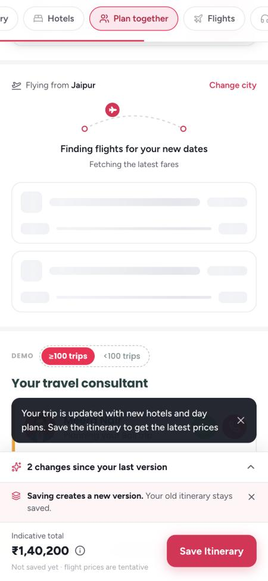
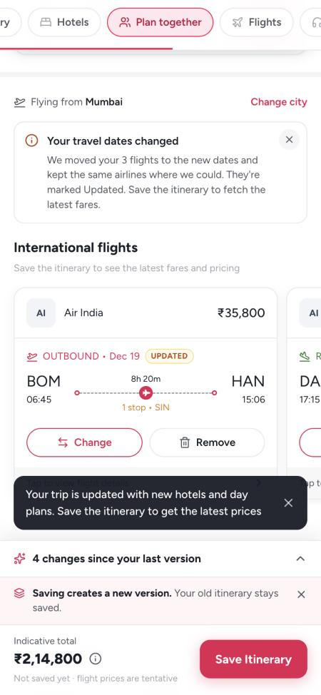
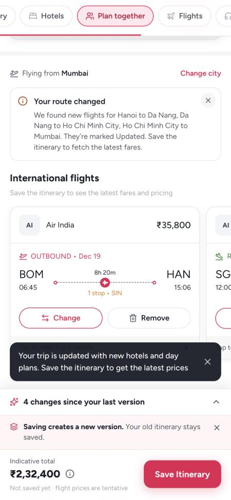
Every flight change is its own line next to hotels, day plans, route and dates: Outbound flight · Mumbai to Hanoi, Added Thai Airways, Dec 15, 02:30. Others: Now X. Was Y; Removed (was X); No flights found from Jaipur; Flying from: Jaipur now, was Mumbai.
Each line has Undo. A line that only follows a new route, new dates or a new city has no Undo of its own and says so (Follows your new route); it goes back when that change is undone. Discard all changes puts every flight back as saved.
Save Itinerary fetches the latest fare for each flight along with hotels and day plans, and saves a new version. Toast: Itinerary saved as V2. Latest flight fares are up ₹1,200 (or down). No mention when nothing moved.
The notes switch to Fares as fetched when you last saved the itinerary, and the bottom bar shows the final price.
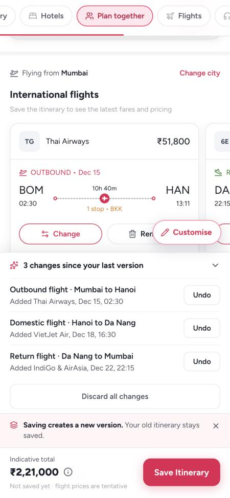
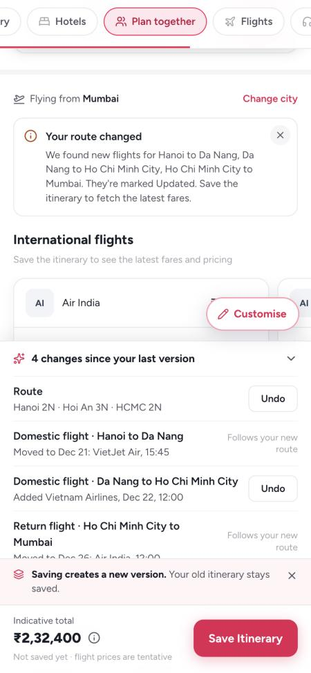
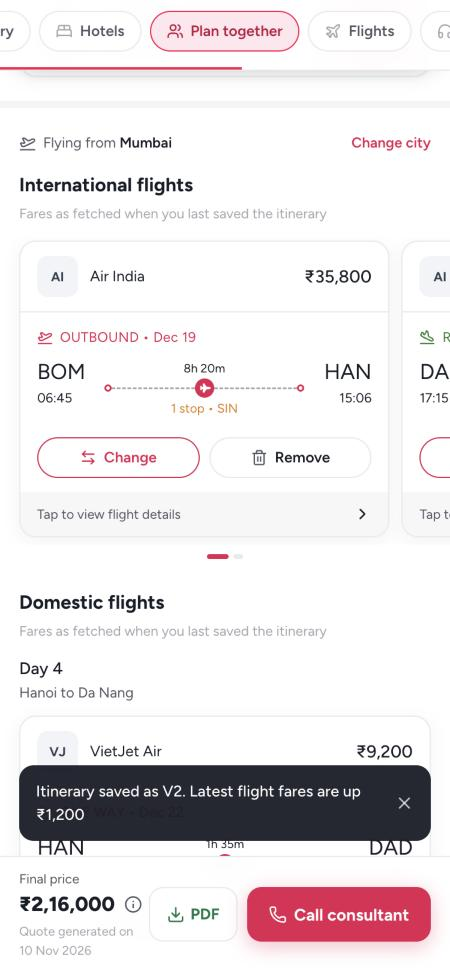
Customers cannot type in a flight of their own. A flight on the itinerary is always one we fetched, or one their travel consultant added.
We couldn't fetch flights. No fares came back for Jaipur to Hanoi on Sat, Dec 19. Your travel consultant can add this flight for you, and you can still change it after. Buttons: Ask Meera on WhatsApp, Try again. Skip stays in the header.
Opens a chat with the trip's consultant with the flight already named: Hi Meera, the app couldn't find flights for Jaipur to Hanoi on Sat, Dec 19. Could you add one to my itinerary? No consultant assigned yet: the button reads Ask your consultant.
A flight skipped because no fares came back stays in the section as a red dashed row, No flights found for Jaipur to Hanoi, with Ask Meera on WhatsApp and Search again. It is not treated as removed.
Same row, and the notice adds in red: We couldn't find flights for Jaipur to Hanoi on the new dates. Your travel consultant can add it for you.
Shows like any other flight card, with its fare and bags, and the customer can change or remove it.
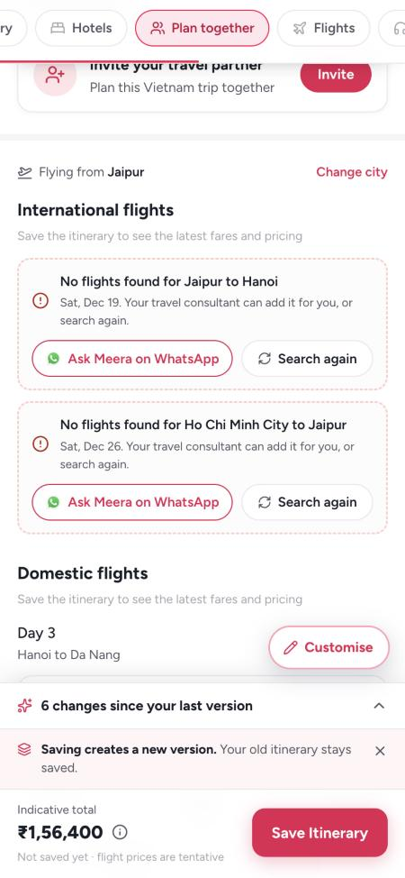
A city flies from the airport that serves it. A hop by car or boat is not a flight and never shows in Flights.
| Country | Airports | Flights inside the country | Not flights |
|---|---|---|---|
| Vietnam | Hanoi (also Ha Long, Ninh Binh), Da Nang (also Hoi An), Ho Chi Minh City, Phu Quoc | Hanoi to Da Nang, Da Nang to HCMC, HCMC to Phu Quoc | Hanoi to Ha Long, Hoi An to Da Nang (car) |
| Thailand | Bangkok, Phuket, Chiang Mai (also Chiang Rai, Pai), Krabi, Koh Samui | Bangkok to Phuket, Bangkok to Chiang Mai, Krabi to Koh Samui | Phuket to Krabi (car) |
| Bali | Denpasar for every Bali area, Labuan Bajo | Bali to Labuan Bajo | Ubud to Seminyak (car), to Nusa Penida (boat) |
| Where | Text |
|---|---|
| Empty section | Flights not included in this price · Add flights from your city to see what the whole trip costs. You can change or remove them any time. · Add flights |
| City sheet | Where are you flying from? · Next, you'll choose each flight. Every option shows its fare and bags. |
| City sheet, changing | We'll fetch flights from the new city. Your domestic flights stay as they are. |
| Loader | Fetching live fares for Tue, Dec 15 · Finding flights for your new dates · Finding flights for your new route |
| Chooser footer | Tentative total so far · Flight prices are tentative. Save the itinerary to fetch the latest fares. |
| Section notes | Save the itinerary to see the latest fares and pricing · Fares as fetched when you last saved the itinerary |
| Card tag | UPDATED |
| Toasts | Flights added. Save the itinerary to fetch the latest fares · Flight changed. … · Return flight removed (Undo) |
| Bottom bar | Not saved yet · flight prices are tentative |
| Save toast | Itinerary saved as V2. Latest flight fares are up ₹1,200 |
| Fetch failed | We couldn't fetch flights · Your travel consultant can add this flight for you, and you can still change it after. · Ask Meera on WhatsApp · Try again · No flights found for Jaipur to Hanoi · Search again |
Fares, times and airlines in the prototype are generated samples, steady per route and date. Screenshots are from a Vietnam trip: Mumbai, Hanoi, Hoi An, and later Ho Chi Minh City.